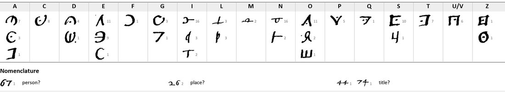

At a glanceKey recovered from the ciphertext alone · 160 of 165 symbols; four number codes open
- The document
- An unsigned, undated slip of six lines, all in cipher, to “le Signorie Vostre”, presumably the Signoria of Siena; 16th century from its spelling and hand.
- Where
- Archivio di Stato di Siena, Concistoro 2308, fasc. 2, a faint pencil “5”(?); DECODE R4794, catalogued “1500–1599” with no status.
- The cipher
- A pigpen-like grid: the alphabet in blocks of four letters, each block one family of frames, and a dot moves a frame to another block; a dozen free signs as extra homophones; the numbers 26, 44, 67, 74 as a small nomenclator.
- How it was deciphered
- Claude transcribed the slip and George Lasry refined it in CTTS; CTTS cryptanalysis gave 23 values, and Claude completed the key by crib guessing and dragging.
- What it says
- “Di alcuni pezzi [d’]i artigliaria 44 di 26”: Their Lordships should act with prudence, since 67 too has some suspicion, and not come to an understanding with the present 74 of 26.
- Still open
- The four number codes (26, 44, 67, 74); writer, place and date.
- Credit
- George Lasry, with CTTS and Claude: key and reading, sent by email to Daniel Bourdeau on 17 October 2026. This page reports his result.
The two other sixteenth-century Sienese pieces of George Lasry’s report, no. 17 (Tantucci, 1528) and no. 15 (Bandini, 1547), are different ciphers with their own pages.
01The slip and its key
165 symbols in six lines: 160 letter signs (35 distinct) and five number codes. The frames reading e, f, g, h without a dot read o, p, q, r with one. No key in Concistoro 2308 fits, though two Sienese pigpen-type keys of about 1530–55 (DECODE R4776, R4786) share its style.

02The decipherment
George Lasry’s reading, unchanged (the whole slip is cipher; number codes as written; [d’] and [n] supplied where the encipherer slipped):
Di alcuni pezzi [d’]i artigliaria 44 di 26. Le Signorie Vostre, come so, faranno si governin con prudentia, perché ancho 67 ha qualche impressio[n], non è la mente che Vostre Signorie s’intendino col presente 74 di 26.
His translation: “Concerning some pieces of artillery of 44 of 26. Your Lordships, as I know, will see to it that matters are handled with prudence, because 67 too has some suspicion (impressione); it is not the intention that Your Lordships should come to an understanding with the present 74 of 26.” The first letter (D) and the s of impressione rest on single signs read from context.
03What remains
- The number codes: 26 (a place or state, twice in “di 26”), 44 and 74 (titles or offices?) and 67 (a person or power). They cannot be known without the lost key.
- Writer, place and date. The project’s inventory of 24 September 2026 gives no. 5 to another sheet (R4791, a clear letter to “Maffeo da Siena”) and read this slip’s pencil number as an erased 4 or 5, hence the question mark.
04Sources
- Archivio di Stato di Siena, Concistoro 2308 fasc. 2: DECODE R4794.
- George Lasry, “The cipher documents of Concistoro 2308, fasc. 2”, report of 17 October 2026, pp. 31–32.
Manuscript rights: Archivio di Stato di Siena.
Report text, key figure, profile and the project’s earlier transcription: targets/siena5/.